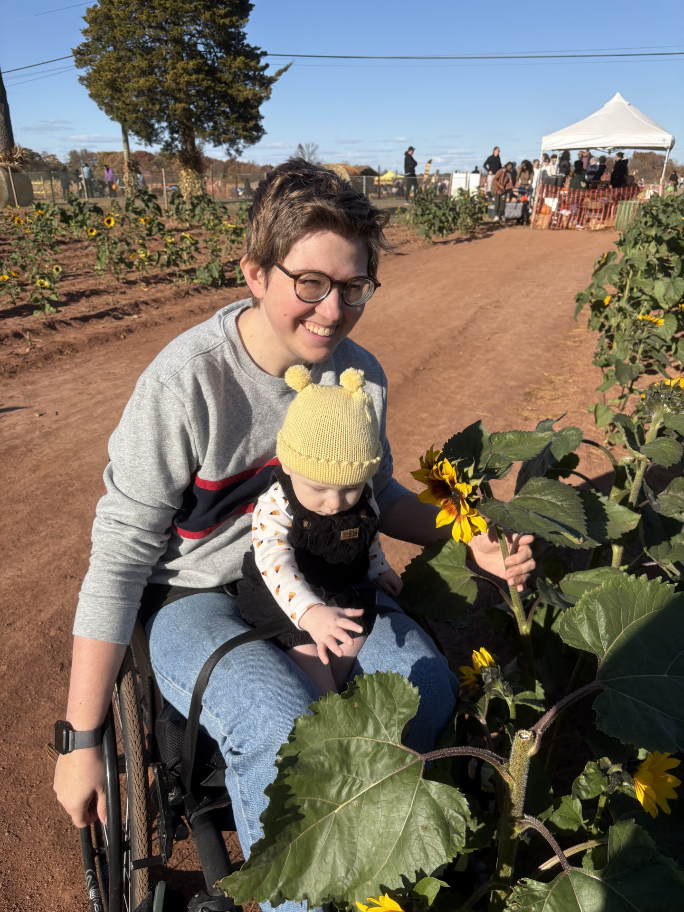

I am a postdoctoral fellow at the Rutgers Center for Cognitive Science. I received my PhD in Philosophy from Rutgers University in 2024 under Elisabeth Camp.
I work on how perspectives, and the social positions behind them, impact decision and interaction across language, epistemology, and cognition. You can read more about my research here., and view my CV here.
cal[dot]howland[at]rutgers[dot]edu